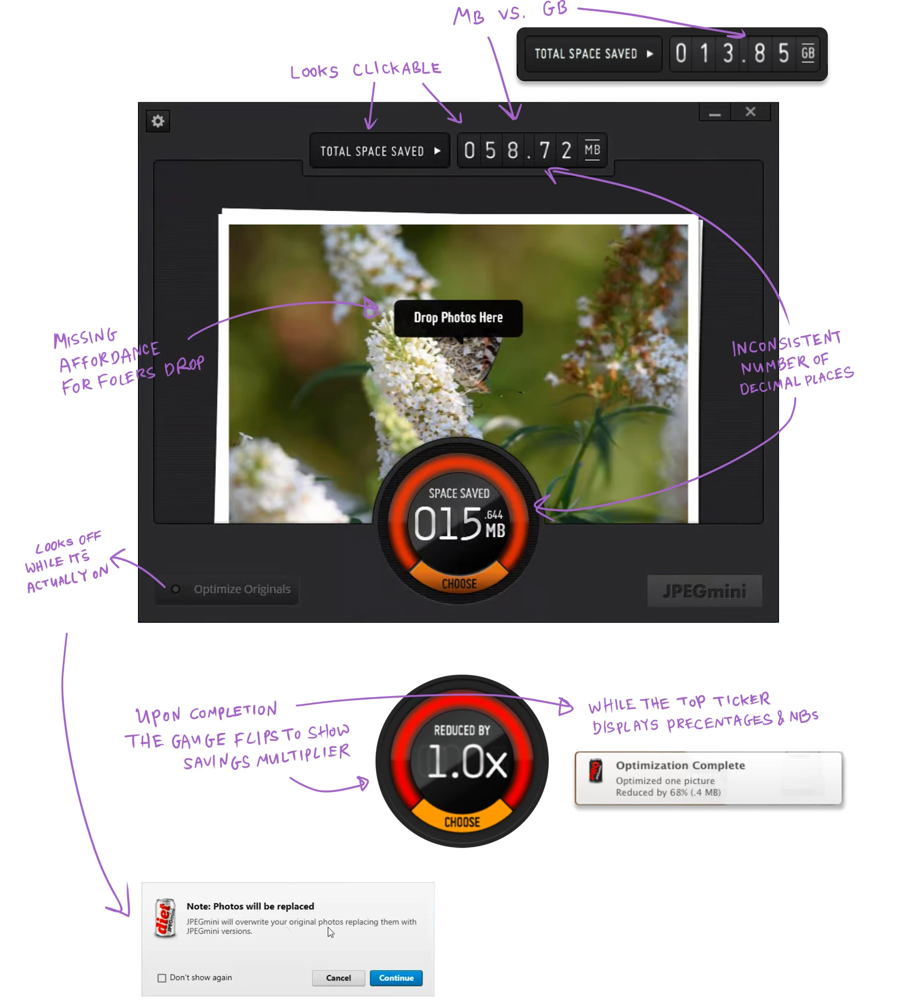
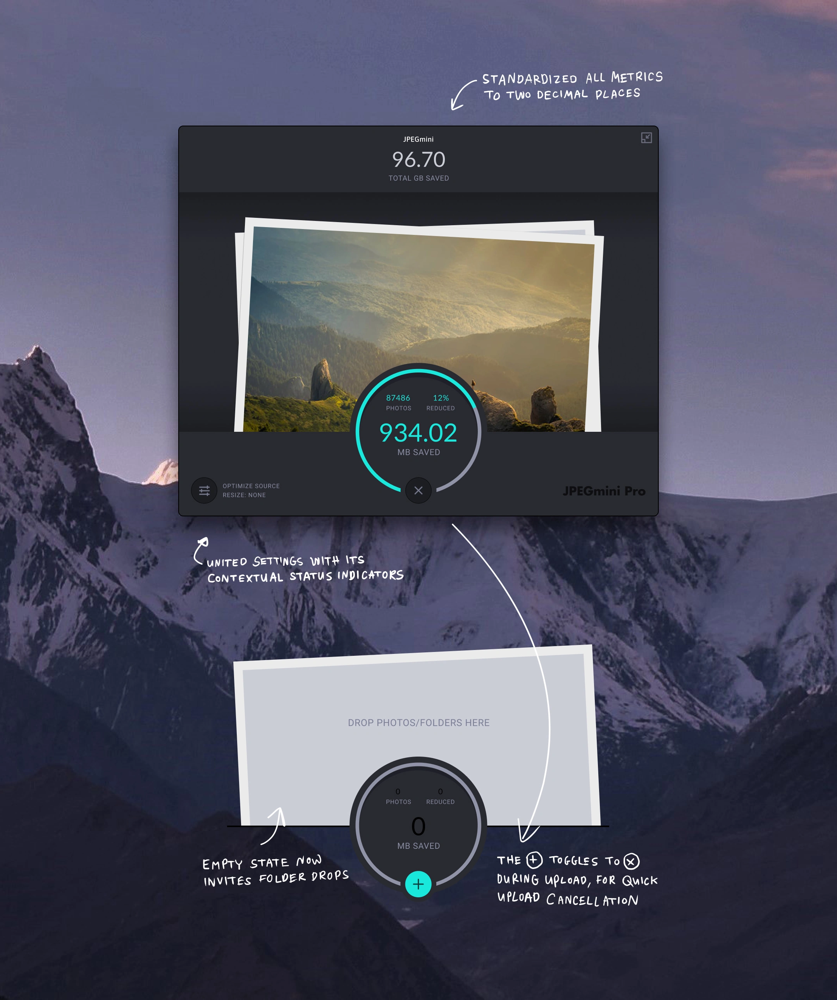
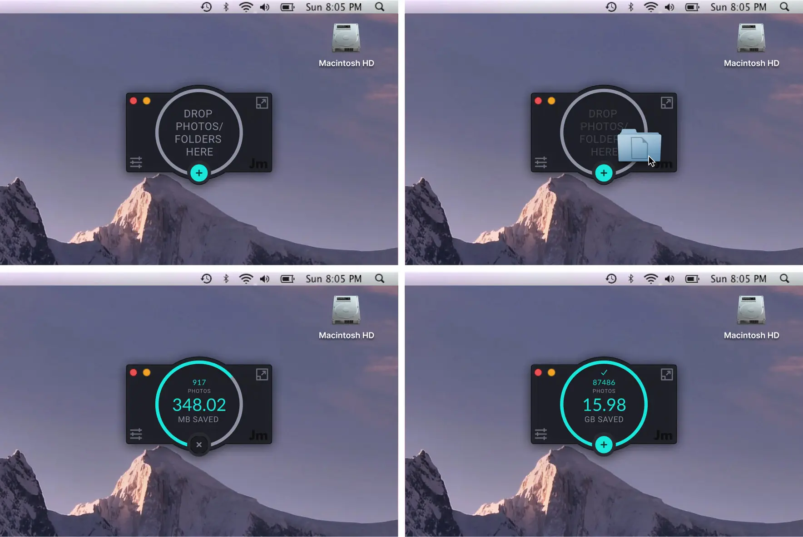
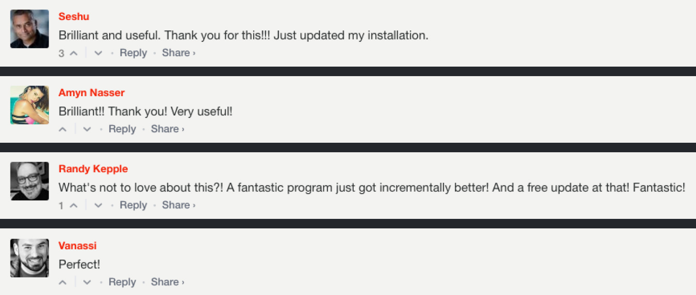

Case study
Redesigning
Redesigning
a loved standard
JPEGmini was already an indispensable tool for photographers worldwide when they brought me on to redesign their desktop app, turning a heavy utility into an effortless, low-friction tool built for speed


JPEGminime:
floating desktop companion
Additionally, I designed a lightweight minimized mode that floats over the workspace, giving photographers instant, low-friction access to compression without disrupting their daily desktop workflow.

User reaction
